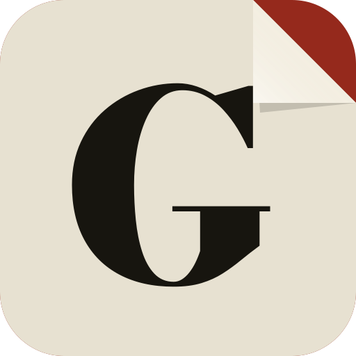
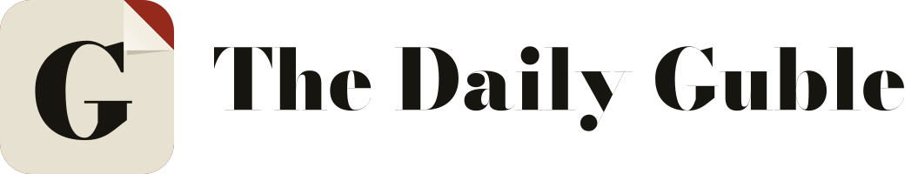
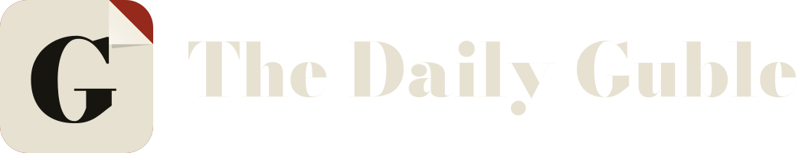
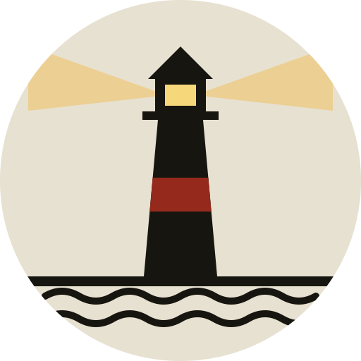
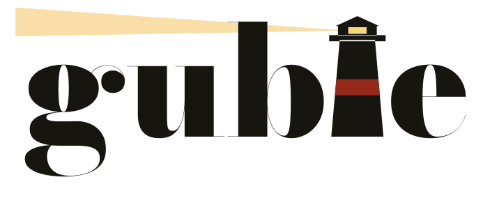
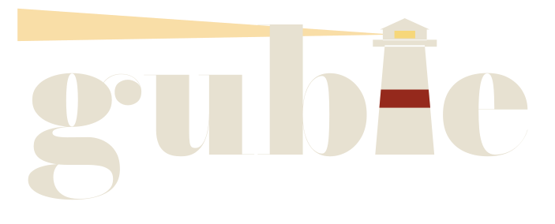
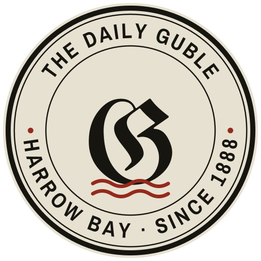
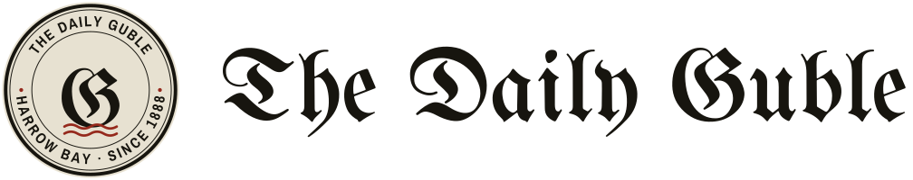
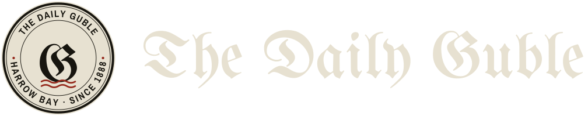

Three directions, each drawn from something only this paper has. Every letter is a real outline, so the files work anywhere: website, app icon, print, signage.
A heavy Bodoni G on a square of newsprint with its corner dog-eared, showing red underneath. It's the page curl, the paper's signature move, as a mark.



The word "guble" where the l is a lighthouse, its beam sweeping back over the word. The harbor town, and a paper that keeps the light on.



A printer's seal: the paper's name, town and founding year around the ring, a blackletter G in the middle, tide lines below. The old newspaper office, stamped.


